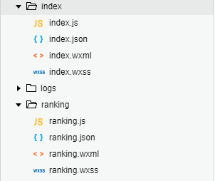
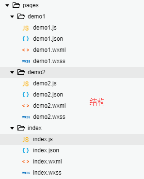

1、新建一个页面文件夹

"pages": [
"pages/index/index",
"pages/ranking/ranking"
],3、在wxml页面中用navgator标签实现跳转
<navigator url="../ranking/ranking">排行榜</navigator>1、在地址后面用 ?属性=属性值 的方式传值，多个属性之间用 & 连接
<navigator url="../ranking/ranking?name=月排行榜&age=1">排行榜</navigator>2、在跳转后的页面的 .js 文件中接收值,options中数据就是页面跳转时传递的值
Page({
onLoad: function (options) {
console.log(options)
}
}) <navigator url="../ranking/ranking?name=月排行榜&age=1" redirect>排行榜</navigator>
<!-- index.wxml -->
<view>
<navigator url='../demo1/demo1'>普通页面跳转</navigator>
<button bindtap='ondemo1'>通过API跳转</button>
<button bindtap='ondemo2'>通过API跳转，不能返回</button>
</view>//index.js
//获取应用实例
const app = getApp()
Page({
ondemo1:function(){
wx:wx.navigateTo({
url: '../demo1/demo1',
success: function(res) {
console.log("通过API跳转成功")
},
// 成功时的回调函数
fail: function(res) {},
//失败时的回调函数
complete: function(res) {},
//完成时的回调函数，无论成功或失败都会执行
})
},
ondemo2:function(){
wx:wx.redirectTo({
url: '../demo2/demo2',
success: function(res) {},
fail: function(res) {},
complete: function(res) {},
})
}
})<!--pages/demo1/demo1.wxml-->
<text>pages/demo1/demo1.wxml</text>
<button bindtap='toback'>返回上一级</button>// pages/demo1/demo1.js
Page({
toback:function(){
// wx:wx.navigateBack()
wx:wx.navigateBack({
delta: 1,
//delta指定返回的页面，默认是1
})
}
})